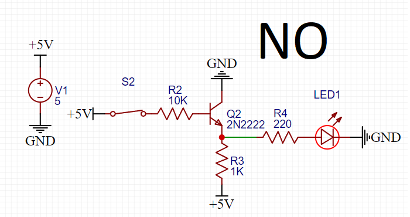
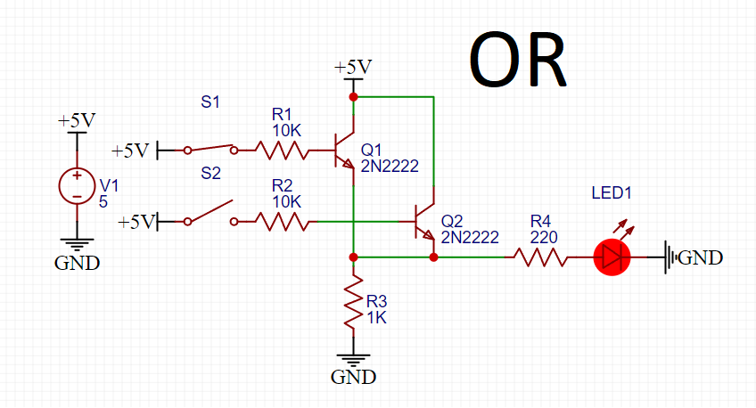
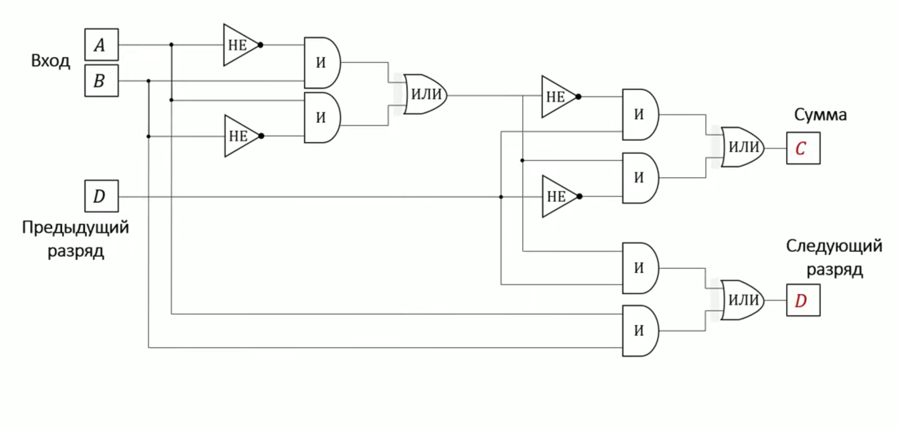
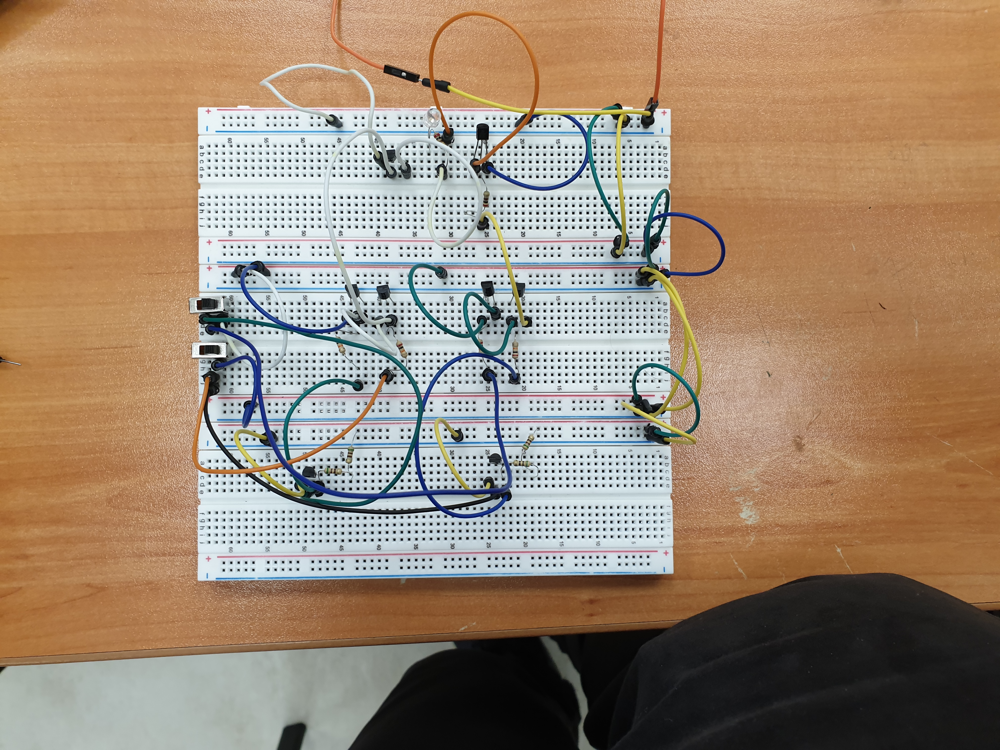
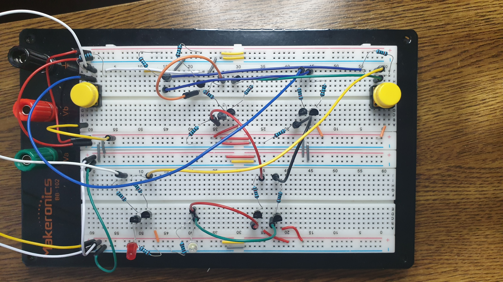
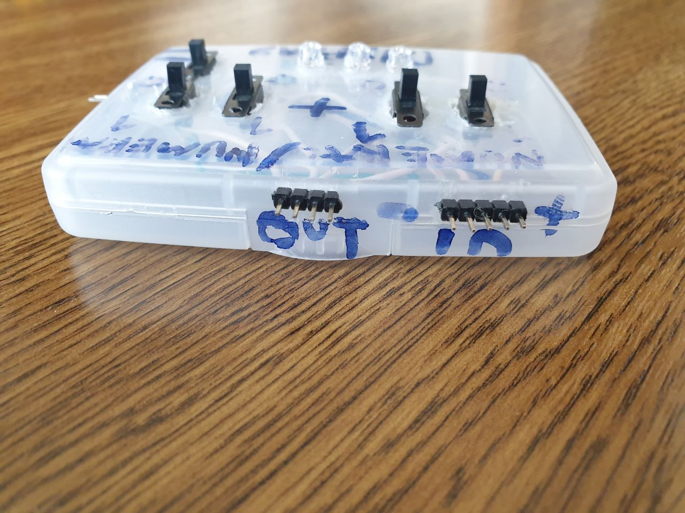

What is this project about?
This project is designed for 2 digits addition using a digital adder.
What was used for the project?
In order to accomplish the project I needed to know how to:
- add binary numbers
- work “or”, “and”, “no” logic elements
- create an adder from logic elements
For that I used:
- Transistors
- Resistors
- Switches
- LEDs
What was the process to achieve my goal?
First, I collected logical elements to understand how they work.
Here is the concept of how “AND" works:
Here is the concept of how “NO” works:
And here is the concept of how “OR” works:
Then I learned how the adder works and collected them from logical elements. See below:
  After all that process, I started the main assembly and connected two adders, where values carry in, as well as out
